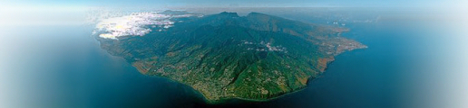

Encore des photos de la Réunion

Photo : Hervé Douris
Et oui, comme nous arrivons à la fin du mois de juin et que j'ai deux articles à écrire, ce dernier va être court mais bref. Il traite un sujet déjà abordé
en juillet 2003 et en juillet 2001. Les liens vers les photos
des îles de l'océan indien ne manquent pas comme en témoigne la
rubrique du répertoire DMOZ en anglais qui en recense quelques unes
mais il faut un site un peu plus original que quelques photos de vacances pour être cité ici.
L'originalité de zivoi.com (aujourd'hui disparu) est de faire une mise à jour régulière
de ses reportages. IPRéunion fait déjà ce travail de manière
professionelle et couvre l'actualité au quotidien mais zivoi le fait avec beaucoup moins de moyens et il convient de saluer ce travail.
L'exceptionnel de ce mois est plus technique et je vous propose pour
la fin du printemps de regarder -grâce à quicktime VR- des panoramiques de la réunion sur le
bien nommé panoramas.re. Encore une fois, IPRéunion avait déjà
présenté quelques panoramiques de la sorte et il s'agissait déjà du
travail de Hervé Douris qui aujourd'hui présente son propre site avec des paysages remarquables.
Le site explique plus où moins les techniques de prise de vue, grâce à
des photos fixes ou l'horizon est un cercle. Vu sous cet angle on a une toute autre perspective.